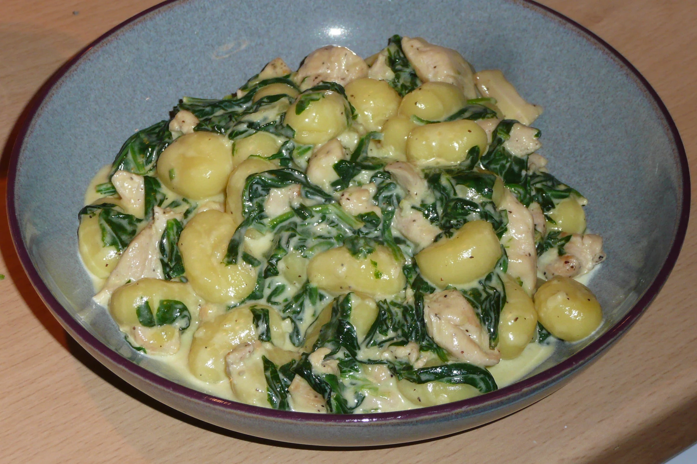

Kuřecí maso s gnochi

Popis
Kuřecí maso s gnochi je rychlý ale chutný recept. Nenechte se zmást, vzhledem k přítomnosti smetany jde o poměrně sytý pokrm. Vyladěná chuť ale dokáže po náročném dni v práci potěšit nejednoho strávníka.
Ingredience
- 300g kuřecích prsou
- 2ks cibule
- olej na smažení
- 200ml smetana na vaření
- špenát
- sůl
- pepř
- čerstvá či sušená bazalka
- parmazán
Postup
- Omyjeme, osušíme a nakrájíme maso na nudličky. Maso osolíme a opepříme.
- Očistíme cibuli, omyjeme a nakrájíme na kostičky. Špenát očistíme a nakrájíme listy na proužky
- Roztopíme olej na pánvi a na něm dáme zesklovatět cibuli.
- Jakmile je cibule zesklovatělá, přidáme maso a necháme je orestovat.
- Po dokončení masa stáhneme plamen a necháme směs lehce zchladnout.
- Do pánve vlijeme smetanu na vaření a necháme mírně probublávat.
- Do směsi přidáme nakrájené listy špenátu a 3 minuty necháme povařit.
- Na závěr přidáme čerstvou či sušenou bazalku.
- Naservírovanou porci můžeme zastrouhat parmazánem a ozdobit lístkem bazalky.